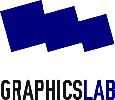
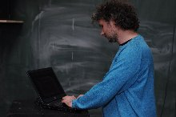
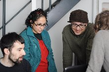
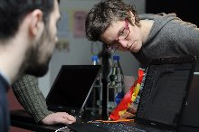
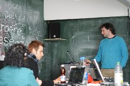
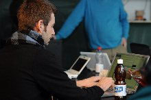

<html>
</html>
<!DOCTYPE html 
    PUBLIC "-//W3C//DTD XHTML 1.0 Transitional//EN" 
    "http://www.w3.org/TR/xhtml1/DTD/xhtml1-transitional.dtd">
<html xmlns="http://www.w3.org/1999/xhtml">
<head>
  <title>GraphicsLab</title>
  <meta http-equiv="content-type" content="text/html; charset=utf-8">
  <link rel='stylesheet' href='grafiklabor.css' type='text/css' />
</head>
<body>
<p><a href="../"></a></p>
<div id="content">
  <h1>Grafik<span class="blue">labor</span><br />
  <span style="font-size:x-large;">Dock18, Zurich</span></h1>


  <p>Das Grafiklabor ist der Treffpunkt für Anwender, Grafiker, Lehrer, Fans und Entwickler von Freier Software im grafischen Bereich.</p>

  <p>Wir werden zusammen neue Programme ausprobieren, durchtesten und auf den Kopf stellen.</p>

  </p>Dazu gibt's jeweils ein Hauptthema: in September werden wir uns der Brochuregestaltung mit Scribus und Inkscape widmen!</p>

  </p>Für Neulinge wird es eine kurze Einführung in Scribus geben und – anschliessend – werden wir eine Brochure mit Scribus und Inkscape gestalten.</p>

  <p>

  <h2>Material</h2>
  <ul>

      <li>Jeder bringt seinen Laptop mit. Es sind drei vorinstallierte Laptops vorhanden!</lI>
      <li>Wenn möglich hast du Scribus (http://www.scribus.net) und Inkscape installiert.</li>
  </ul>

  <h2>Kosten</h2>
  <ul>
    <li>Kollekte</li>
  </ul>

  <h2>Kontakt und Infos</h2>
  <p>Für Fragen einfach uns eine Email schicken <a href="mailto:labor@graphicslab.org">labor@graphicslab.org</a>.</p>

  <h2>Wann und wo?</h2>
    <ul>
      <li>Im <a href="http://www.dock18.ch">Dock18</a>, <a href="http://www.rotefabrik.ch">Rote Fabrik</a>, <a href="http://map.search.ch/zuerich/rote-fabrik">Zürich</a></li>
      <li>Jeden 1en Sonntag im Monat von 14 bis 18 Uhr:
        <ul>
          <li>5. &ndash; 7 November: <a href="1011_kollaborative_buch.html">Das kollaborative Buch</a></li>
          <li>3. Oktober: Brochure Gestaltung</li>
          <li>17./18. September 2010: Stand am FrOSCamp</li>
          <li>4. Juli 2010: Offene Werkstatt</li>
          <li>6. Juni 2010: <a href="scribus.html">DTP</a></li>
          <li>2. Mai: 2010 <a href="inkscape.html">Vektorgrafik</a></li>
          <li>18. April 2010: Bildbearbeitung und Computermalerei</li>
          <li>
          7. März: <em>Fotobearbeiung</em><br />
          Für Neulinge wird es eine kurze Einführung in GIMP geben mit – anschliessend – ein paar Übungen, um das Programm kennenzulernen.<br />
          Dazu werden wir über Farbkorrektur, digitale Fotoentwicklung, Bildermanagement u.s.w. sprechen.
          </li>
        </ul>
    </li>
  </ul>
</div> <!-- content -->
<div id="sidebar">
<h2>GrafikLabor 08<br />
<span class="blue">5. &ndash; 7. November</span> 2010<br />
<a href="1011_kollaborative_buch.html">Das kollaborative Buch</a>
</h2>
  <p></p>
  <p></p>
  <p></p>
  <p></p>
  <p></p>
</div>
</body>
</html>
